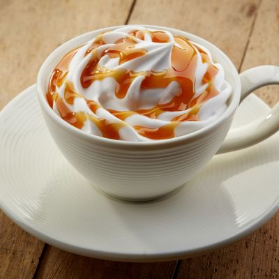

Caramel Macchiato

Description
Caramel Macchiato is a coffee beverage; The name refers to the method of preparation, where the milk is stained by the addition of espresso and caramel is used as flavoring.
Ingredients
- 6 ounces of brewed coffee
- 6 ounces of steamed milk
- 1-2 teaspoon sugar
- 3 teaspoons of caramel syrup
- 1/2 teaspoon of artificial vanilla flavoring
- Reddi whipped cream
- Caramel syrup drizzled
Directions
- Brew a ratio of 3 heaping tbsp of coffee to 6 cups of water
- Add vanillia to the coffee grinds before making the coffee
- Microwave milk in a large cup
- Combine the coffee, milk, and caramel syrup and stir well
- Add sugar until desired sweetness is achieved
- Top off with whipped cream and drizzled caramel